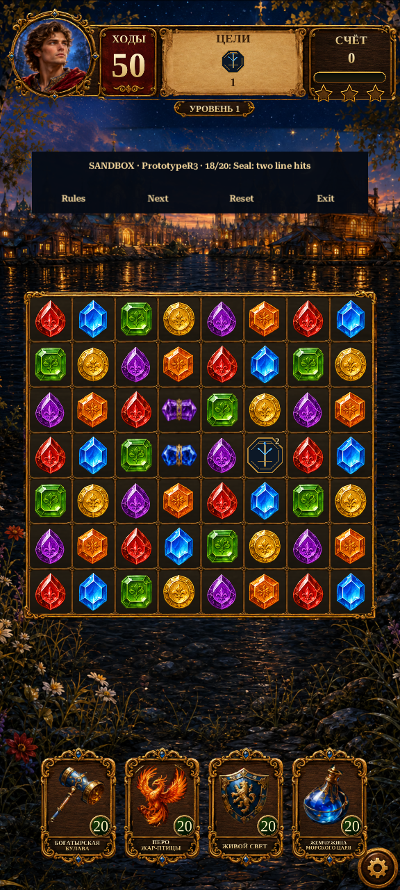

Gameplay Mechanics R3 · Runic Seal
A stationary, two-layer obstacle that needs direct special or line/area booster hits. Ordinary adjacent matches leave it intact. Its goal completes only when the final layer breaks.

Actual Unity renders at 576×1280. Synthetic test board, 50 starting moves. The navy, antique-gold and sapphire seal is a code-drawn prototype. It is not extracted reference artwork or a balanced campaign round.
Try it in Unity
Enter Play Mode, reach Home, close any modal, then choose Legends of Rus → Development → Gameplay Mechanics Sandbox. The sandbox opens with R3 and the adjacent-match fixture. Use Next for two line hits, two Spark hits, and direct booster hits. Inventory is temporary. Rules cycles Legacy/R1/R2/R3; Exit returns Home.
Behavior verified
The seal occupies its cell, blocks swaps and splits gravity like a crate. Each resolution wave removes at most one layer, including overlapping blasts. The next wave may remove another. Color-only clearing and reshuffle do not damage it. R3 supports the earlier Spark and bomb rules. Older rule profiles reject seal boards.
Next review
Playtest a small set of representative rounds combining ice, crates, seals, Sparks and bombs. Tune objective clarity, move budgets and effect intensity before authoring the first 50 rounds. Campaign rule activation, migration and device performance remain separate work.
Implementation report · Test evidence · Changed files